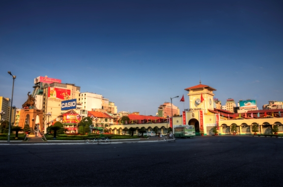
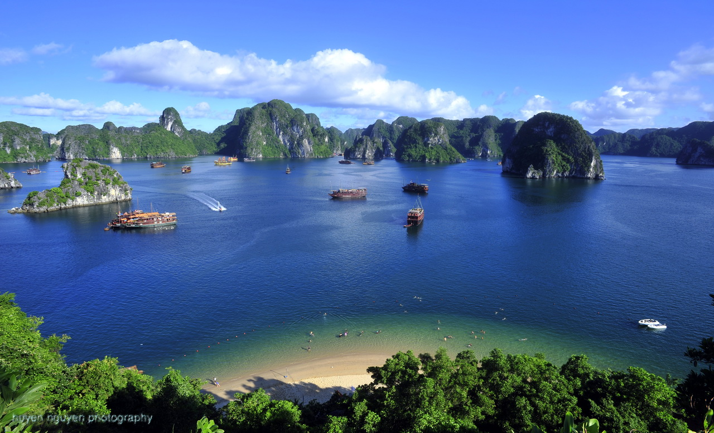

Ha Noi
The city is a perfect blend of the exotic chic of old Asia and the dynamic face of new Asia, of Parisian grace and the Asian pace. Hanoi is where imagination becomes reality.
One of many reasons why tourists love coming to Hanoi is because almost the entire city is covered with green trees. And, it has such diversity- from the old quarter to the urban areas.
Also, Hanoi is regarded as melting pot of Vietnam gastronomy. You can find all sorts of delicacies in this city which come in from other provinces.

Ho Chi Minh City
Ho Chi Minh City is Vietnam's undisputedly commercial headquarters with a keen sense of its own importance as Vietnam emerges from years of austerity to claim a place in the "Asian Tiger" economic slugfest. Located on the Saigon River, Ho Chi Minh City or Saigon as it is still called by all, is Vietnam's major port and largest city, and still survives in wide downtown avenues flanked by pristine colonials. Thousands of expatriates and Vietnamese immigrants couldn’t imagine living anywhere else. They’ve long since fallen for the hidden charms of one of Southeast Asia’s most hectic, and eclectic, cities.

Ha Long Bay
Speaking of Ha Long Bay, one must above all mention the beauty of its water and sky. Majestic and mysterious, inspiring and appealing: words alone cannot do justice to the natural wonders of this World Heritage Site. With over 3 thousand incredible islands jutting out from the emerald waters of the Gulf of Tonkin that make up a vision of breathtaking beauty, Halong Bay is pure art and a priceless collection of unfinished sculptures hewn by the hand of nature.
Looking from above, Halong in our eyes appears to be an enormous and expressive picture of Mother Earth. By moving around, you feel as if you are walking in a fairyland with many petrified creatures surrounding you. There are rocks and even islets which form various extraordinary shapes—a Dragon, an Old Fisherman, and much more.